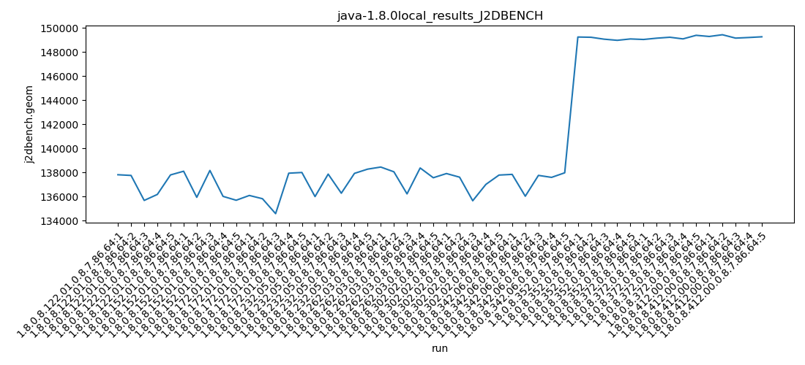
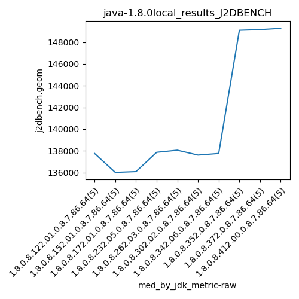

java-1.8.0 J2DBENCH
Context at bottom
/home/jvanek/git/benchmarks-in-nested-virtualisation-toolchain/final_results/local_results/local_results_J2DBENCH
java-1.8.0
J2DBENCH
local_results_J2DBENCH
final score
Expected number of java-1.8.0 JDKs: 10
1st avgmed_alljdks_metric:
/home/jvanek/git/benchmarks-in-nested-virtualisation-toolchain/final_results/result_processing.py /home/jvanek/git/benchmarks-in-nested-virtualisation-toolchain/final_results/local_results/local_results_J2DBENCH j2dbench.geom False
values: [137813, 137755, 135679, 136177, 137798, 138104, 135937, 138169, 136016, 135694, 136091, 135821, 134580, 137942, 138000, 135999, 137865, 136279, 137926, 138278, 138452, 138058, 136222, 138375, 137564, 137912, 137611, 135652, 137010, 137786, 137843, 136029, 137759, 137594, 137974, 149255, 149234, 149075, 148981, 149095, 149051, 149158, 149236, 149099, 149397, 149300, 149444, 149164, 149214, 149273]

Expected number of iterations: 5
final number of values: 50 out of 50
Pass rate: 100.0%
values: (134580, 149444, 140754.8, 137926)

** accuracy from all jdks and runs
more is better
MIN: 134580
MAX: 149444
AVG: 140754.8
MED: 137926
Relative differences 1:
MIN-MAX: 10.0 %
MIN-AVG: 4.0 %
MIN-MED: 2.0 %
MAX-MIN: -11.0 %
MAX-AVG: -6.0 %
MAX-MED: -8.0 %
AVG-MED: -2.0 %
stored to java-1.8.0.properties. sort | uniq that!
2nd avgmed_by_jdk_metric:
values: [137044.4, 136784.0, 136486.8, 137269.4, 137734.2, 137194.2, 137439.8, 149128.0, 149188.2, 149279.0]

values: [137755, 136016, 136091, 137865, 138058, 137611, 137759, 149095, 149158, 149273]

values: (136486.8, 149279.0, 140754.8, 137439.8)
values: (136016, 149273, 140868.1, 137865)

** accuracy from all jdks where runs were avged
more is better
MIN: 136486.8
MAX: 149279.0
AVG: 140754.8
MED: 137439.8
Relative differences 1:
MIN-MAX: 9.0 %
MIN-AVG: 3.0 %
MIN-MED: 1.0 %
MAX-MIN: -9.0 %
MAX-AVG: -6.0 %
MAX-MED: -9.0 %
AVG-MED: -2.0 %
stored to java-1.8.0.properties. sort | uniq that!
** accuracy from all jdks where runs were medianed
more is better
MIN: 136016
MAX: 149273
AVG: 140868.1
MED: 137865
Relative differences 1:
MIN-MAX: 9.0 %
MIN-AVG: 3.0 %
MIN-MED: 1.0 %
MAX-MIN: -10.0 %
MAX-AVG: -6.0 %
MAX-MED: -8.0 %
AVG-MED: -2.0 %
stored to java-1.8.0.properties. sort | uniq that!
/home/jvanek/git/benchmarks-in-nested-virtualisation-toolchain/final_results/local_results/local_results_SPECJBB
java-1.8.0
J2DBENCH
/home/jvanek/git/benchmarks-in-nested-virtualisation-toolchain/final_results/local_results/local_results_RADARGUNs1
java-1.8.0
J2DBENCH
/home/jvanek/git/benchmarks-in-nested-virtualisation-toolchain/final_results/local_results/local_results_RADARGUNs3
java-1.8.0
J2DBENCH
/home/jvanek/git/benchmarks-in-nested-virtualisation-toolchain/final_results/local_results/local_results_JMH
java-1.8.0
J2DBENCH
/home/jvanek/git/benchmarks-in-nested-virtualisation-toolchain/final_results/local_results/local_results_DACAPO
java-1.8.0
J2DBENCH
pass rates:
local_results_J2DBENCH=100.0%
Context:
- local_results
- J2DBENCH